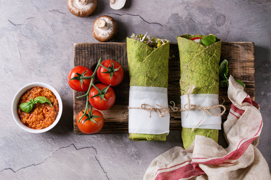

品茶味，解茶语

甜品
抹茶冰淇淋
- 
抹茶蔬菜卷
草莓樱桃/抹茶甜甜圈
抹茶华夫饼
蓝莓抹茶蛋糕
抹茶冰淇淋吐司面包
车厘子山药抹茶卷
草莓抹茶蛋糕
做法
Practice
工具
1、电饭煲一个
2、手用的搅拌器一个（电动的更好）
3、大碗两个
材料
1、鸡蛋4个
2、面粉100克（其中里面加入10克淀粉，这样可以减少面的筋度，用蛋糕粉更好）
3、糖100克
4、抹茶粉12.5g
制作
1、把鸡蛋蛋黄与蛋白分开分别放入两个大碗中（这种方法能缩短搅打时间，适合于手动搅拌器）
2、糖1/3放入蛋黄中，2/3放入蛋白中
3、搅打蛋黄搅成淡黄色即可（一般搅1分钟就行了）
4、搅打蛋白搅成象奶油状（打到蛋白在手尖中能力起来，这个时间可要长喽，打到碗中没有蛋液为止，这个步骤直接取决于蛋糕的质量，如果碗中还有蛋液会使蛋糕胀不起来，而成为蛋饼）
5、将面粉（筛过）放入到蛋黄中，轻轻搅均（搅拌过猛会使面产生筋度，影响蛋糕质量），搅完后你会发现面都团到一起（不用加水）
6、将抹茶粉和蛋白放入到5中搅均
7、蛋浆准备好后，就可以在电饭煲里面抹上一层油，把蛋浆倒进去。盖上盖子，按电饭锅“煮饭”按钮，跳到保温后再等2-3分钟，再按一次煮饭，几分钟后就可以闻到一股蛋糕的香味，打开盖子，表面是浅黄色的，比原来长高了一点，用筷子戳一下，如果戳得进去，并且筷子没有粘蛋浆，就表示可以了
8、放凉后，可以用鲜奶油等进行装饰
Weng Yu


QQ:594487604
WeChat:13678432409
Emeil:594487604@qq.com
Tel:13678432406